a[y-Ime C¥y: Iebpw kmln-Xyhpw
F.Un. BbncØn Ccp\q‰n\m¬∏Ønbmdn¬ N{μ-`m-K-
\-ZoapJØv hniz-hn-Jym-X-amb kqcy-t£-{X-Øn\v
ASn-Ød C´p. Zqsc-bp≈ ]¿h-X-ß-fn¬\n∂v ]e-X-cw-
I-√p-Iƒ sIm≠p-h-∂p. \oeKncn-bn¬\n∂pw Zqsc-bp≈
\m´p-cm-Py-ß-fn¬\n∂pw -sh-fp-ØXpw Idp-ØXpw \oe-
\n-d-Øn-ep-≈-Xp-amb ine-Ifpw sIm≠p-h-∂p...... t£{X-
Øn\p apI-fn¬ Ieiw ÿm]n-°p-∂-Xn-\p-th≠n Ccp-]-
Øn-b©v ASn s]m°hpw AºØmdm-bncw a∂v `mc-
hpap≈ ine-Iƒ \qdn-tesd ssa¬ Zqcw Pe-am¿K-Øn-eq-
sS sIm≠p-h-∂v Ccq-\qdv ASn Db-c-Øn¬ t£{X-in-J-
c-Øn¬ ÿm]n-®p..... Bbn-cØn Ccp-\qdv inev]n-Iƒ
kz¥w kpJ-ku-I-cy-ßfpw B{K-lß-fpsa√mw Dt]-£n-®p-
sIm≠v {]Xn-⁄-sNbvXp: ""sImWm¿°nse Ieiw Dd-∏n-
°p-∂-Xp-hsc Xncn®p t]mhp-I-bn√''......... Ah¿ GIm-{K-
X-tbmsS ]{¥≠v h¿j-w \nc-¥cw ]Wn-sb-SpØp.''
Page 7
Page 8


kmaq-ly-imkv{Xw
104
a[y-Ime C¥y:Iebpw kmln-Xyhpw
Ah-tbm-tcm∂pw H‰-°√n¬ sImØn-sb-Sp-Øh-bm-Wv. C¥y-bpsS
]e `mKØpw Cu coXn-bn¬ H‰°√n¬ t£{X-߃ \n¿an-®n-cp-∂p.
alm-cm-jv{S-bnse Ft√md Kplm-t£-{X-߃ CØ-c-Øn¬s∏-´-
h-bm-Wv. Bdmw \q‰m-≠p-ap-X¬ ]{¥≠mw \q‰m-≠p-h-sc-bp≈
Ime-ØmWv Cu t£{X-߃ \n¿an-®-Xv. _u≤-¿, ssP\¿,
alm-_-en-]p-csØ ]©-cY߃
{]ikvX HUnb kmln-Xy-Imcn {]Xn-`m-dm-bv "inem-]flw' F∂
t\mh-en¬ sImWm¿°nse kqcy-t£-{X-Øns‚ \n¿am-W-sØ-
°p-dn®v \¬In-b hnh-c-W-am-Wv apI-fn¬ sImSp-Øn-´p-≈Xv.
CXn¬\n∂v Fs¥√mw hnh-c-ß-fmWv Is≠-Øm-\m-Ip-∂Xv?
t£{X-Øns‚ \n¿am-W-Øn-\m-h-iy-amb ]e -\n-dØn-ep≈
ine-Iƒ C¥y-bpsS hnhn[ `mK-ß-fn¬\n∂pw sIm≠p-
h-∂p.
sImWm¿°nse kqcy-t£-{X-Øn\p ]pdsa [mcmfw \n¿an-Xn-Iƒ
a[y-Ime C¥y-bn¬ Db¿∂p h∂p. AhbpsS \n¿am-W-sØ-
°p-dn®pw khn-ti-j-X-I-sf-°p-dn®pw Hcp At\z-j-W-am-bmtem?
sXt° C¥y-bn¬ Im©o-]pcw Bÿm-\-am°n `cWw \S-Ønb
cmPm-°-∑m-cm-bn-cp∂p ]√-h-∑m¿. Ah-cpsS {][m\ Xpd-apJ\K-
c-am-bn-cp∂p alm-_-en-]p-cw. ]√-h-cm-Pm-hmb \c-knw-l-h¿as‚
ImeØv AhnsS \n¿an® t£-{X-߃ ]©-c-Y-߃ F∂-dn-b-
s∏-Sp-∂p.
Page 9

Ãm≥tU¿Uv VI
105
a[y-Ime C¥y:Iebpw kmln-Xyhpw
sshjvW-h-¿, ssih¿ F∂n-h-cpsS t£{X߃ \ap°v Ft√m-
d-bn¬ ImWmhp-∂-Xm-Wv.
]n¬°m-eØv sNØn-an-\p-°nb ]md-Iƒ D]-tbm-Kn®v Db-c-ta-dnb
t£{X-߃ \n¿an-°p∂ coXn \ne-hn¬ h∂p. Ch-bn¬ `qcn-`m-
Khpw _lp-\n-e-t£-{X-ß-fm-bn-cp-∂p.
Bkm-anse Imam-Jy-t£{Xhpw tNmfcmPm-hmb cmP-cm-P≥
X©m-hq-cn¬ \n¿an® _rl-Zo-izct£{Xhpw CXn\v DZm-l-c-W-
ßfm-Wv.
]n∂oSv t£{X-`nØn-Iƒ inev]-߃ sIm≠-e-¶-cn-°p∂
k{ºZmbw hym]-I-ambn. cmam-b-Ww, alm-`m-cXw, `mK-hXw F∂n-
h-bnse -IYmk-μ¿`-ß-fpsS Zriy-߃ t£{X-®pa-cp-I-fn¬
sImØn-h-®p. Ch-bv°-]p-dsa bp≤-cw-K-ß-fp-sSbpw \rØ ˛
kwKoX cwK-ß-fp-sSbpw inev]-ßfpw t£{X-`n-Øn-I-fn¬
ÿm\w ]nSn®p.
Ft√m-d-bnse Kplm-t£-{X-߃
Bkm-anse
Imam-Jy-t£{Xw
X©m-hq-cnse _rl-Zo-iz-c-t£-{Xw
Page 10

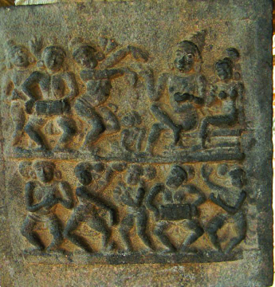
kmaq-ly-imkv{Xw
106
a[y-Ime C¥y:Iebpw kmln-Xyhpw
t£{X-`n-Øn-I-fn¬ inev]-߃sIm-≠-e-¶-cn-°p∂ -co-Xn°v DZm-
l-c-W-am-Wv a[y-{]-tZ-inse JPp-cm-tlm-t£{Xw.
""C¥y-bn¬ C∂p ImWp∂ t£{X-\n¿am-W-co-Xn- hnhn[ L´-ßfneqsS
hnImkw {]m]n-®-Xm-Wv''. ka¿Yn-°p-I.
kwKo-X-cwKw
bp≤-cwKw
\rØ-cwKw
a[y-{]-tZ-inse JPp-cmtlm t£{Xw
Page 11

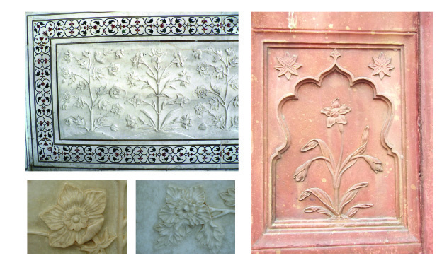
Ãm≥tU¿Uv VI
107
a[y-Ime C¥y:Iebpw kmln-Xyhpw
k¬Ø-\Øv `c-WImeØv C¥y-bn¬ Hcp ]pXnb hmkvXp-
hn-Zym-ssien cq]-s∏-´p. CXv C≥tUm ˛ C…m-anIv hmkvXp-
hn-Zym-ssien F∂-dn-b-s∏-Sp-∂p.
hmkvXp-hn-Zym-cw-KØv hnZ-Kv[-cm-b-hsc Xp¿°n, t]¿jy F∂o
cmPy-ß-fn¬\n∂v C¥y-bnte°p sIm≠p-h-∂p. Ah-tcm-sSm∏w
Xt±-io-b-cmb inev]n-Iƒ, sXmgn-em-fn-Iƒ, I¬∏-Wn-°m¿ XpS-
ßn-b-h-cpw \n¿am-W-{]-h¿Ø-\-ßfn¬ ]¶m-fn-I-fm-bn. Ccp-Iq-´-
cp-sSbpw ssien-Iƒ ka-\z-bn-®mWv C≥tUm ˛ C…m-anIv
hmkvXp-hnZymssien- cq]-s∏-´-Xv. Cu hmkvXp-hn-Zym-co-Xn-bpsS
Nne khn-ti-j-X-Iƒ ]cn-tim-[n-°mw.
Iam-\-ßfpw Xmgn-I-°p-S-ßfpw an\m-c-ßfpw Cu ssien-
bpsS apJy khn-ti-j-X-I-fm-Wv.
sI´n-S-ßfn¬ Ae-¶m-c-Øn-\p-th≠n ]pjv]-ß-fpsSbpw
kky-ß-fp-sSbpw cq]-߃ sImØn-h-®p.
Iam\w
Iam\w
Xmgn-I-°pSw
an\mcw
kky-ß-fp-sSbpw ]pjv]-ß-fp-sSbpw cq]-߃
Page 12


kmaq-ly-imkv{Xw
108
a[y-Ime C¥y:Iebpw kmln-Xyhpw
sI´n-S-ß-fpsS \n¿am-W-Øn\v IpΩm-bw, Nph∂I√v,
am¿_nƒ apX-em-bh D]-tbm-Kn-®p.
\n¿an-Xn-I-tfmSp tN¿∂v hnim-e-amb ]qt¥m-´-ßfp-≠m°n.
Cu hmkvXp-hnZym ssien-bn¬ ]Wn-Xo¿Ø BZy \n¿Ωn-Xn-
bmWv IpØv_v an\m¿.
k¬Ø\Øv ÿ-m-]-I-\m-bn-cp∂ IpØp-_p±o≥ sF_Iv BWv
IpØv_v an\m-dns‚ \n¿amWw Bcw-`n-®Xv. C¬XpXvanjv
CXns‚ \n¿amWw ]q¿Øn-bm-°n. Db-c-ap≈ tKm]p-chpw tKm-
]p-c-Øn¬ \n∂v X≈n\n¬°p∂ _m¬°-Wn-Ifpw CXns‚ khn-
ti-j-X-I-fmWv.
apKƒIm-e-L-´-Øn¬ C≥tUm-˛-C…m-anIv ssien IqSp-X¬
{]Nmcw t\Sn. apKƒcm-Pm-°-∑m¿ Cu ssien-bn¬ \nc-h[n tIm´-
Iƒ, Bcm-[-\m-e-b-߃, ih-Ip-So-c-߃ apX-embh \n¿an-®p.
Ah-bn¬ Nne-Xv \ap°v ]cn-N-b-s∏-Smw.
U¬ln-bn¬ ÿnXnsNøp∂ lpa-bq-Wns‚ ih-Ip-So-cw Cu
ssien-bn¬ \n¿an-®-XmWv. at\m-l-c-amb ]qt¥m-´-Øns‚ a[y-
`m-K-ØmWv Cu ih-Ip-So-cw ÿnXn sNøp-∂-Xv. Nph∂
aW¬°√pw shÆ-°√pw sIm≠mWv CXv \n¿an-®n-cn-°p-∂-Xv.
XmPva-l-ens‚ \n¿am-W-Øn\v amXr-I-bm-°nbXv Cu kvamc-I-
sØbm-Wv.
IpØv_v an\m¿
lpa-bq-Wns‚ ih-Ip-Socw ˛ U¬ln
Page 13

Ãm≥tU¿Uv VI
109
a[y-Ime C¥y:Iebpw kmln-Xyhpw
apKƒ N{I-h¿Øn-bmb jmP-lm-≥ ]-Xv\n- apwXmkv al-ens‚
Hm¿a-bv°mbn B{K-bn-¬ \n¿an® XmPva-l¬ C≥tUm˛ C…m-
anIv ssien-bpsS G‰hpw \√ DZm-l-c-W-am-Wv. CXns‚ \n¿am-
W-Øn\v sh≈ am¿_n-fmWv D]-tbm-Kn-®Xv.
XmPva-l¬
U¬ln-bnse sNt¶m-´-bmWv Nn{X-Øn¬ ImWp-∂-Xv. AXn\v
Cu t]cp hcm≥ Imc-W-sa-¥m-bn-cn°pw?
apKƒ`-c-W-Im-esØ tIm´-I-fn¬ {][m-\-s∏-´-XmWv CXv. ]q¿W-
ambpw Nph∂ aW¬°-√p-Iƒ sIm≠mWv sNt¶m´ \n¿an-®n-cn-
°p-∂-Xv.
C≥tUm˛CkvemanIv ssien-bn-ep≈ as‰mcp \n¿an-Xn-bmWv
U¬ln-bnse Ppam-a-kvPn-Zv. am¿_nfpw Nph-∂-I-√p-Ifpw D]-tbm-
Kn-®mWv CXv \n¿an-®n-cn-°p-∂-Xv.
sNt¶m´
KT 629-2/Soci.Science-6-(M)-Vol-II
Page 14


kmaq-ly-imkv{Xw
110
a[y-Ime C¥y:Iebpw kmln-Xyhpw
a[y-Ime C¥y-bnse {][m\ \n¿an-Xn-I-sf-°p-dn®v hnh-c-߃ tiJ-cn°pI.
NphsS sImSpØ ]´nI ]q¿Øn-bm-°p-I.
Ppam-a-kvPnZv ˛ U¬ln
\n¿anXn
t]cv
{]tXy-I-X-Iƒ
_rl-Zo-iz-c-t£{Xw
$ Xan-gv\m-´nse X©m-hq-cn¬ ÿnXnsNøp-∂p.
$ tNmf-cm-Pmhmb cmP-cm-P-\mWv \n¿an-®Xv
$ C¥y-bnse hnkvXr-Xhpw Db-c-ta-dn-b-Xp-amb
t£{X-ß-fn¬ H∂mWv.
$ ]md-Iƒ sNØn-an-\p°n \n¿an-® _lp-\n-e-
t£{Xw.
$
$
$
$
$
$
$
$
$
$
$
$
_mlvan\n kp¬Øm-∑m-cpsS ImeØv \n¿an® tKmƒKpw-_kv
(_nPm-∏q¿) IpØ_v jmln kp¬Øm-∑m-cpsS ImeØv \n¿an®
Nm¿an-\m¿ (sslZ-cm-_m-Zv) F∂n-hbpw C≥tUm ˛ C…m-anIv
hmkvXp-hn-Zym-ssi-en-°v DZm-l-c-W-ß-fmWv.
Page 15


Ãm≥tU¿Uv VI
111
a[y-Ime C¥y:Iebpw kmln-Xyhpw
A°meØv Z£n-tW-¥y-bn¬ hnP-b-\-Kc cmPm-°-∑m¿ \n¿an®
{][m\ t£{X-ß-fmWv hn´ekzman-t£-{Xhpw lkm-c-cm-a-t£-
{X-hpw. ap≥Ime \n¿an-Xn-I-fn¬ \n∂p Ch-bn¬ ImWp∂ am‰-
߃ Fs¥-√mw?
C≥tUm ˛ C…manIv hmkvXp-hn-Zym-ssi-en-bn-ep≈ \n¿an-Xn-I-fpsS
s]mXp-hmb khn-ti-j-X-Iƒ Is≠Øn Fgp-XpI.
hn´ekzman-t£-{Xw
sIm®n-bnse sk‚v {^m≥knkv ]≈n
Ch ]md-Iƒ sNØn-an-\p°n \n¿an® _lp-\n-e-
t£{XßfmWv.
t£{X-ß-tfmSp tN¿∂v -a-fi-]-߃ \n¿an-®p.
Ae-¶m-c∏-Wn-Ifp≈ XqWp-Iƒ \n¿an®p.
t£{X-߃ hn]pes∏SpØn.
]Xn-\mdmw \q‰m-≠n¬ t]m¿®p-Ko-kp-Im¿ Hcp
]pXnb hmkvXp-hn-Zym-ssien C¥y-bn¬
]cn-N-b-s∏-Sp-Øn. CXv tKmYnIv ssien F∂-
dn-b-s∏-Sp-∂p. Iq¿Ø tKm]p-c-ßfpw Iam-\-
ßfpw CXns‚ apJy khn-ti-j-X-IfmWv.
sIm®n-bnse sk‚ v {^m≥knkv ]≈n-bpw
tKmh-bnse t_mwPo-kkv ]≈n-bpw Chbv°v
DZm-l-c-Wßfm-Wv.
apI-fn¬ N¿® sNbvX hmkvXp-hnZymssien-
Ifnep≈ \n¿an-Xn-Iƒ C¥y-bpsS kmwkvIm-
cnI kº-∂-X-bp-sSbpw sshhn-[y-Øn-s‚bpw
{]Xo-I-ß-fm-Wv.
Page 16

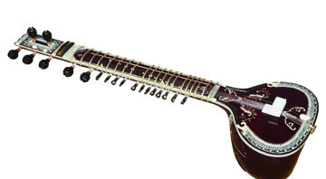
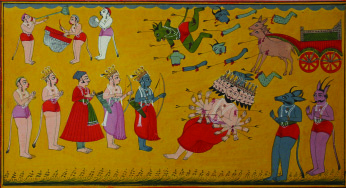
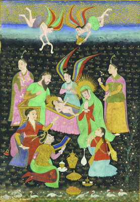
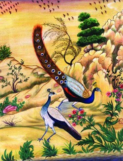
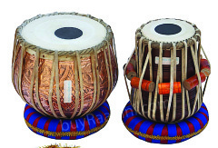

kmaq-ly-imkv{Xw
112
a[y-Ime C¥y:Iebpw kmln-Xyhpw
kwKoXhpw Nn{X-I-ebpw
hmkvXphnZy IqSmsX a[y-Im-e -C¥ybn¬ kwKo-XcwKhpw A`n-
hr≤n {]m]n-®p. Z£n-tW-¥y-bn¬ I¿Wm-SIkwKoXw IqSp-X¬
hnImkw {]m]n®p. I¿Wm-SIkw-Ko-XØnse {it≤-b-\m-bn-cp-∂p
]pc-μ-c-Zm-k≥.
k¬Ø-\Øv˛apKƒIme-L-´-Øn¬ t]¿jy≥ kwKo-X-Øns‚
kzm[o-\-^-e-ambn ]pXn-sbmcp kwKo-X-ssien cq]-s∏-´p.
CXmWv lnμp-ÿm\nkwKoXw. Aan¿Jp-{kp, Xm≥k≥ XpS-
ßn-b-h¿ A°m-esØ {it≤-b-cmb kwKo-X-⁄-cm-Wv. JΔmen
F∂ kwKo-X-cq]w cq]-s∏´Xv C°m-eØmWv. JΔmenbpsS
hf¿®-bn¬ Aao¿Jp{kp
henb ]¶p-h-ln-®p. \nc-h[n
]pXnb kwKo-tXm-]-I-c-W-ß-ƒ
C°me-L-´-Øn¬ cq]w-sIm≠p.
X_-e, knXm¿ F∂nh CXn-\p-
Zm-l-c-W-ß-fmWv.
kwKo-X-Øn-se-∂-t]mse Nn{X-
I-ebnepw a[yIme-L-´-Øn¬
{it≤-b-amb am‰-߃ h∂p.
Nn{X߃ {i≤n-°q...
apKƒNn{X-Ie ˛
ss__n-fnse kμ¿`w
apKƒ Nn{X-Ie ˛
cmam-bW-Ønse k-μ¿`-߃
apKƒ Nn{X-Ie- ˛ sIm´m-c-Zr-iy-߃
apKƒ Nn{X-Ie- ˛
{]Ir-Xn--Zr-iy-߃
X_e
knXm¿
kq^n-h-cy-∑m¿ Xma-kn-®n-cp∂
Jm≥IIfn¬ cq]-s∏´ Hcp
kwKo-X-cq-]-amWv JΔm-en. D¿Zp-
`m-j-bn¬ cNn-°-s∏´ `‡n
KoX-߃ hmZy-ta-f-ß-fpsS
AI-º-Sn-tbmsS NSp-e-amb Xmf-
{I-a-Øn¬ Be-]n-°p-∂-XmWv
CXns‚ {]tXy-IX.
JΔmen
Page 17


Ãm≥tU¿Uv VI
113
a[y-Ime C¥y:Iebpw kmln-Xyhpw
A°m-eØv Nn{XcN-\bv°v kzoI-cn® Bi-b-߃ Fs¥√mambn-
cp-∂p?
cmam-bWw, ss__nƒ, sIm´m-c-Po-hnXw, {]Ir-Xn-Zr-iy߃ XpS-
ßn-bh-bm-bn-cp-∂p Nn{X-ßfpsS {]ta-b-߃.
kmlnXyw
a[y-Ime C¥y-bn¬ hmkvXp-
hn-Zy, kwKoXw, Nn{XIe F∂o
taJ-e-Ifnep≠mb hnIm-kw-
t]mse kmln-Xyhpw ]ptcm-
KXn t\Sn-.
a[y-Im-eØv C¥y-bn¬ cq]w-
sIm≠ `‡n-{]-ÿm-\hpw
kq^n-{]-ÿm-\hpw A°m-
esØ kmln-Xy-Øns‚ ]ptcm-
K-Xnbn¬ \n¿Wm-b-I-amb ]¶p-
h-ln-®p.
`‡n-{]-ÿm\Øns‚ hchv
hnhn[ {]mtZ-inI`mj-Iƒ°v DW¿th-In. `‡n-{]-ÿm-\-Ønse
Ihn-I-sf√mw km[m-c-W-°m-cs‚ `mjbnemWv Ihn-X-Iƒ cNn-
®-Xv. CXv {]mtZ-inI`mj-I-fpsS hf¿®bv°v klm-
b-I-am-bn. CØ-c-Øn¬ hnImkw {]m]n® `mj-
IfmWv :
ae-bmfw
sXep¶v
I∂U
admØn
lnμn
_wKmfn
KpP-dmØn
ssZh-tØm-Sp≈ kvt\lhpw `‡nbpw ASn-ÿm-
\-am°n Z£n-tW-¥y-bn¬ cq]w-sIm-≠-XmWv `‡n-
{]-ÿm-\w. Z£n-tW¥ybnse `‡n-{]-ÿm-\-Øn\v
\mb-\m¿am¿, Bgvhm¿am¿ F∂ c≠p hn`m-K-ß-
fp-≠mbncp∂p. \mb-\m¿am¿ inh-`-‡cpw
Bgvhm¿am¿ hnjvWp-`-‡-cp-amWv. ]Xn-\memw \q‰m-
t≠msS Cu Bibw DØ-tc-¥y-bn-te°v hym]n-
®p. Kpcp-\m-\m-°v, I_o¿Zm-kv, Xpf-ko-Zm-kv,
kq¿Zmkv, Xp°mdmw, aocm-`m-bv, ssNX\y XpS-ßn-
b-h-cm-bn-cp∂p DØ-tc-¥y-bnse `‡n-{]-ÿm-\-
Øns‚ {][m\ {]Nm-c-I¿.
`‡n-{]-ÿm\w
BUw-_c Pohn-XsØ FXn¿
°p-Ibpw BflobPohn-XØn\v
{][m\yw \¬Ip-Ibpw sNbvX-
h-cm-bn-cp∂p kq^n-Iƒ. kq^v
F∂ Ad_v hm°n¬ \n∂mWv
kq^nkw F∂ ]Zw D≠m-b-
Xv. JzmPm sambv\p-±o≥ NnkvXn,
\nkm-ap-±o≥ Huenb XpS-ßn-b-
h¿ kq^n-{]-ÿm-\-Øns‚
{]Nm-c-I-cm-bn-cp-∂p.
kq^n-{]-ÿm\w
Page 18


kmaq-ly-imkv{Xw
114
a[y-Ime C¥y:Iebpw kmln-Xyhpw
C°m-eØv Nne {][m\ {]mtZ-in-I-`m-j-Ifn-ep-≠mb kmln-Xy-
Ir-Xn-IfpsSbpw Ah-bpsS cN-bn-Xm-°-fp-sSbpw t]cp-Iƒ Xmsg
\¬In-bn-cn-°p-∂p.
lnμn
cma-N-cn-X-am-\-kw˛
Xpf-ko-Zmkv
ae-bmfw
A[ym-fl-cm-am-bWw ˛
Fgp-Ø-—≥
Xangv
Ccm-a-h-Xmcw
(Iº-cm-am-b-Ww) ˛ Iº¿
sXep¶v
alm-`m-cXw˛
\∂-ø
I∂U
hn{I-am¿÷p-\-hn-Pbw
(]º-`m-c-Xw) ˛ ]º
HUnb
HUn-b-a-lm-`m-cXw ˛
kc-f-Zmk
KpP-dmØn
KpP-dmØn `mK-hXw˛
t{]am-\μ
admØn
admØn `mK-hXw ˛
GIv\mYv
_wKmfn
_wKm-fn-cm-am-b-Ww˛
IrXn-hmk
{]mtZ-in-I-`m-j-Ifpw
IrXn-Ifpw
{]mtZ-inI `mj-I-fn-ep-≠mb IrXn-I-sf-°p-dn®pw kmln-Xy-Im-c-∑m-sc-°p-
dn-®p-ap≈ hnh-c-߃ Nm¿´n¬ \n∂v tiJ-cn®v ]´nI ]q¿Øo-I-cn-°pI.
Page 19

Ãm≥tU¿Uv VI
115
a[y-Ime C¥y:Iebpw kmln-Xyhpw
kq^n-{]-ÿm\w Ddp-Zp-`m-j-bpsS hf¿®-bn¬ {][m\ ]¶p-
h-ln-®p. Ad-_n, t]¿jy≥ F∂o `mj-Ifpw C¥y≥ {]mIrX
`mj-I-fmb LSnt_men, {_nPv apX-em-b-hbpw IqSn-t®¿∂p≠m-
b-XmWv Ddp-Zp-`mj.
a[y-Ime-L-´-Øn¬ \nc-h[n IrXn-Iƒ t]¿jy≥ `mj-bnte°v
X¿Pa sNbvXp. apKƒ N{I-h¿Øn- AIv_-dpsS ImeØv X¿P-
a-bv°p-th-≠n Hcp hIp∏v Xs∂ {]h¿Øn-®n-cp-∂p. A°m-eØv
cmam-b-Whpw alm-`m-c-Xhpw Dƒs∏sS At\Iw kwkvIrX-Ir-
Xn-Iƒ t]¿-j-y≥ `mj-bn-te°v X¿Pa sNbvXp. D]-\n-j-Øp-°fpw
AY¿hth-Zhpw t]¿jy≥ `mj-bn-te°v X¿Pa sNbvXXv jmP-
lm≥ N{I-h¿ØnbpsS aI-≥ Zmcm-jpt°m BWv. C¥y-bpsS
kwkvIm-chpw hn⁄m-\hpw A\y-tZißfn-te°v hym]n-°p-∂-
Xn¬ ]cn-`m-j-Iƒ°v {][m\ ]¶p-≠m-bn-cp-∂p. ]pdw-\m-Sp-
Ifpambp≈ kmwkvIm-cnI-hn\n-a-b-Øn\v CXv hgn-sbm-cp-°n.
{]mtZ-in-I-`m-j-Iƒ
IrXn-Iƒ
kmln-Xy-Im-c-∑m¿
Page 20

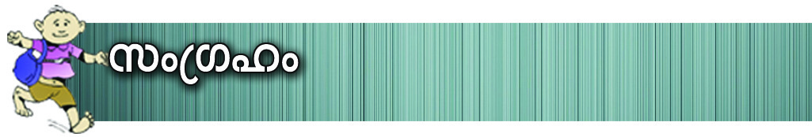

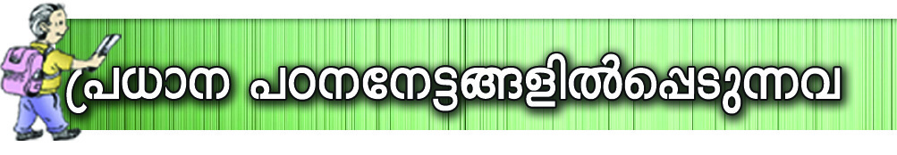
kmaq-ly-imkv{Xw
116
a[y-Ime C¥y:Iebpw kmln-Xyhpw
hgnb
hnhn[ Ime-L-´-ß-fn-eq-sS hnImkw {]m]n-®-XmWv C¥y-
bnse hmkvXp-hn-Zym-coXn.
a[y-Im-e-L-´-Ønse \n¿an-Xn-I-fn¬ hnhn[ hmkvXp-hn-
Zymssien-I-fpsS kzm[o\w {]I-S-am-Wv.
C¥y-bnse kwKo-Xw, Nn{X-Ie XpS-ßn-bh hnhn[
ImeL´-ß-fn¬ hnhn[ ssien-I-fpsS IqSn-t®-c-en-eqsS
hf¿∂p-h-∂-Xm-Wv.
`‡n˛kq^n-{]-ÿm-\-߃ C¥y-bn¬ kmln-Xy-Øns‚
]ptcm-K-Xn°pw {]mtZ-in-I-`m-j-IfpsS hf¿®bv°pw Imc-
W-am-bn.
a[y-Ime C¥y-bnse -hm-kvXp--hn-Zym-co-Xn-I-fpsS khn-ti-
j-X-Iƒ hni-Zo-I-cn-°p-∂p.
C≥tUm˛C…m-anIv hmkvXp-hnZymssien-bpsS khn-ti-j-
X-Iƒ hni-I-e\w sNøp-∂p.
a[y-Ime C¥y-bn¬ kwKo-X-Ønepw Nn{X-I-e-bnepap-
≠mb am‰-߃ hniIe\w sNøp∂p.
a[y-Ime C¥y -˛ Iebpw kmln-Xyhpw
k¬Ø-\Øv ˛ apKƒ
hmkvXp-hn-Zym-coXn
Nn{X-Ie
kwKoXw
t£{X-
\n¿amW
coXn-Iƒ
kmlnXyw
(C≥tUm ˛ C…m-anIv
hmkvXp-hn-Zym-coXn)
Page 21


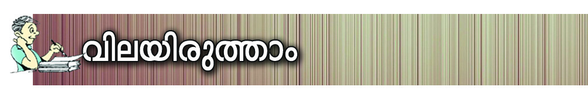
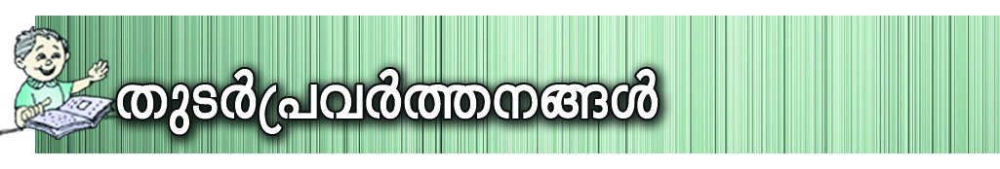
Ãm≥tU¿Uv VI
117
a[y-Ime C¥y:Iebpw kmln-Xyhpw
\n¿an-Xn-Iƒ
Ime-L´w
_rlZo-iz-c-t£{Xw
tNmf-`-c-W-Imew
IpØv_van\m¿
...........................................
lpa-bq¨ ih-Ip-Socw
...........................................
XmPva-l¬
...........................................
sNt¶m´
...........................................
a[y-Ime C¥y-bnse {]mtZ-inI`mj-I-fpsS hnIm-k-
Øn\pw kmln-Xy-Øns‚ hf¿®bv°pw `‡n ˛ kq^n
{]ÿm\߃ hln® ]¶v hne-bn-cp-Øp-∂p.
C≥tUm-˛C…m-anIv hmkvXp-hn-Zy-mssi-en-bpsS khn-ti-j-
X-Iƒ FgpXp-I.
a[y-Im-e-L-´-Ønse Nne \n¿an-Xn-I-fpw Ah \n¿an® `c-
W-Im-e-L-´hpw AS-ßnb ]´nI ]q¿Øn-bm-°p-I.
C¥ybnse hnhn[ \n¿an-Xn-Iƒ°v ]n∂n-ep≈ Ncn-{X-]-
c-hpw ck-I-c-hp-amb hnhc-߃ tiJ-cn-°p-I.
`‡n-{]-ÿm-\-Øns‚ {]h¿Ø-\-߃°p t\XrXzw
\¬In-b-h-scbpw Ah-cpsS {]h¿Ø-\-ta-J-e-Iƒ
Dƒs°m-≈p∂ C∂sØ kwÿm-\-ß-fp-sSbpw ]´nI
Xbm-dm-°p-I.
apKƒ Nn{X-I-e-bp-ambn _‘-s∏´ Nn{X-߃ tiJ-cn®v
Npa¿]{Xw Xbm-dm-°p-I.
Page 22

kmaq-ly-imkv{Xw
118
a[y-Ime C¥y:Iebpw kmln-Xyhpw
]q¿Wambn
`mKn-I-ambn
Xosc-bn√
hnhn[ Ime-ß-fn-eq-sS-bp≈ hf¿®-bp-
sS ^e-am-bn-´mWv C¥y-bnse hmkvXp-
hnZymcoXn cq]-s∏-´-sX∂v Xncn-®-dn-bm≥ Ign-
bpw.
C≥tUm-˛C…manIv hmkvXp-hnZymssien-
bpsS khn-ti-j-X-Iƒ hni-Z-am-°m≥ Ign-bpw.
a[y-Ime C¥y-bnse hmkvXp-hnZy, Nn{X-Ie,
kwKoXw F∂o taJ-e-I-fnse ]ptcm-KXn
hne-bn-cp-Øm≥ km[n-°pw.
a[y-Ime C¥y-bnse \n¿an-Xn-Iƒ C¥y-
bpsS kmwkvIm-cnI AS-bm-f-ß-fm-sW∂v
Xncn-®-dn-bm≥ Ign-bpw.
`‡n-˛-kq^n {]ÿm-\-߃ C¥y-bnse
kmwkvIm-cn-ItaJ-e-bn¬ sNep-Ønb
kzm[o\w hni-I-e\w sNøm≥ Ign-bpw.
kzbw hne-bn-cpØmw
kzbw hne-bn-cpØmw
kzbw hne-bn-cpØmw
kzbw hne-bn-cpØmw
kzbw hne-bn-cpØmw